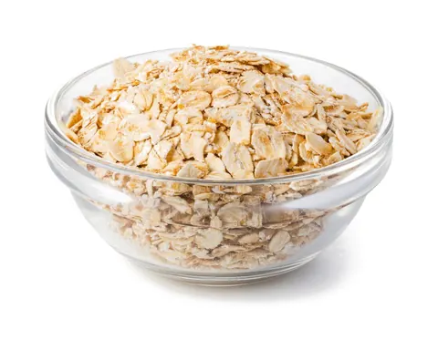

In short
- Keep one-handed snacks and a big drink right by your feeding chair.
- Pick low-mess foods that won't drop crumbs on your baby.
- Restock daily, and keep the basket out of little hands as your baby grows.
Why you need one
If you’re in the thick of the newborn weeks, nursing or bottle-feeding around the clock, you may know this feeling well. One minute you’re happily feeding your sleepy baby, and the next a sudden wave of hunger and thirst hits you like a freight train.
And, of course, your baby is now contact-napping soundly on your chest. You are physically and emotionally pinned.
Enter the feeding chair snack basket: a simple, sanity-saving station that can make the postpartum days a little easier.
Why every feeding spot needs a basket
When you’re spending hours a day in a rocking chair or glider, convenience is everything. A snack and drink station right next to your chair helps in a few big ways:
- No moving required: everything is within arm’s reach, so you don’t risk waking a hard-to-settle baby.
- Steady energy: making milk takes energy. The CDC says breastfeeding moms need about 330 to 400 extra calories a day, and regular snacks help keep you from crashing.
- Water within reach: breastfeeding can make you very thirsty. You don’t need to force extra fluids; keep a big drink nearby and sip whenever you feel thirsty.
What to put in it: the checklist
The key to a great basket is one-handed, low-mess eating: foods that won’t drop crumbs on your baby’s head or need a fork.
1. The drink station
- A large insulated tumbler with a straw: keeps ice water cold for hours and lets you drink with one hand.
- Electrolyte drink packets, if you like them: an easy way to add flavor to water during long night feeds. Plain water is usually all you need.
- Coconut water: a refreshing change from plain water.
2. Grab-and-go dry snacks
- Nut mixes or trail mix: healthy fats and protein to keep you full longer.
- Granola bars or energy bites: look for ones made with oats and flaxseed for fiber and staying power.
- Pretzels or whole-grain crackers: a quick, salty crunch.
- Dried fruit: mango slices, apricots or raisins for a quick, sweet lift.
3. Shelf-stable comforts
- Applesauce pouches: the ultimate no-mess, one-handed treat (yes, the ones meant for kids work wonders for moms too).
- Dark chocolate squares: because postpartum life needs a little daily joy.
- Beef jerky or meat sticks: lots of protein to stave off midnight cravings.
Setting it up for success
- Choose the right container: a woven basket, a small caddy with compartments, or a rolling cart that sits right beside your glider.
- Restock every day: make it part of your morning routine (or ask your partner) so you’re never caught empty-handed at 3 a.m.
- Add non-food essentials: lip balm, a hair tie, hand cream and the TV remote. You’ll thank yourself later.
- Keep a small trash can next to the chair, so wrappers don’t pile up.
- Keep it safe: nuts, seeds and dried fruit are choking hazards for babies and toddlers, so keep the basket out of little hands as your baby gets older. Avoid hot drinks while you’re holding your baby.
Taking care of you, too
A snack basket is a small, loving act of self-care, and a reminder during the 3 a.m. feed: I’m taking care of my baby, and I’m taking care of me, too. What’s your go-to late-night snack? Add it to the basket.
Foods in this article
- Mango
 Beef
Beef
Oats
How to serve each one at every age is in the app's food guide.
Caring for you
Articles and self-care tips about postpartum recovery and well-being are for general information and support. They aren't therapy or medical treatment. If you have signs of postpartum depression or anxiety, or physical problems after birth, reach out to your doctor, midwife or a licensed mental health professional right away. In a crisis, call or text 988, or call 911.
Sources
- Maternal Diet and Breastfeeding · CDC
- Choking Hazards · CDC
All articles, recipes, guides, tips and chat answers in Mama & Baby Bites are for general information and education only. They are not medical, pediatric or nutritional advice, and they don't replace care from a qualified professional. In an emergency, call 911.